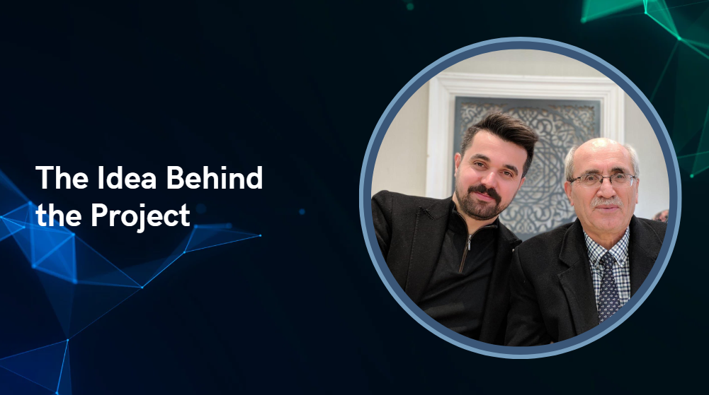
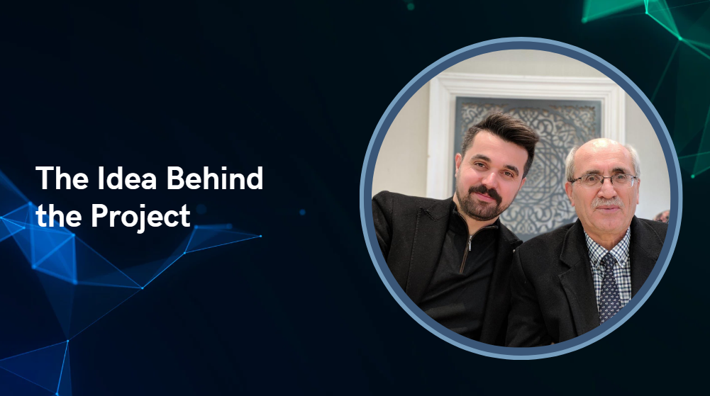

Beginning & The Idea Behind the Project [Eren]
TR:
Merhaba sayın jurilerim biz Batman Türk Telekom Anadolu Lisesi'nin 12. sınıf öğrencileriyiz. Benim adım Eren Aygün. Projemizin anlatımına geçmeden önce projenin hikayesinden bahsetmek istiyorum size, Danışman öğretmenimiz babasını ALS'den dolayı kaybetti ALS ile ilgili bilgi edindikce içimiz acıdı ve hastalara karşı merhamet duygusu hissettik. Dolayısıyla bu hastaların hayatına dokunmak istedik. Ve ALS hastaları için çok dilli, düşük maliyetli ve yapay zeka destekli bir iletişim sistemi yaptık.
Merhaba sayın jurilerim biz Batman Türk Telekom Anadolu Lisesi'nin 12. sınıf öğrencileriyiz. Benim adım Eren Aygün. Projemizin anlatımına geçmeden önce projenin hikayesinden bahsetmek istiyorum size, Danışman öğretmenimiz babasını ALS'den dolayı kaybetti ALS ile ilgili bilgi edindikce içimiz acıdı ve hastalara karşı merhamet duygusu hissettik. Dolayısıyla bu hastaların hayatına dokunmak istedik. Ve ALS hastaları için çok dilli, düşük maliyetli ve yapay zeka destekli bir iletişim sistemi yaptık.
EN:
Hello dear juries, we are 12th grade students of Batman Türk Telekom Anatolian High School. My name is Eren Aygün. Before moving on to the narration of our project, I would like to tell you about the story of the project, Our advisor teacher lost his father due to ALS. When we learned about ALS, our hearts ached and we felt a sense of compassion for the patients. Therefore, we wanted to touch the lives of these patients. And we made a multilingual, low-cost and artificial intelligence-supported communication system for ALS patients.
Hello dear juries, we are 12th grade students of Batman Türk Telekom Anatolian High School. My name is Eren Aygün. Before moving on to the narration of our project, I would like to tell you about the story of the project, Our advisor teacher lost his father due to ALS. When we learned about ALS, our hearts ached and we felt a sense of compassion for the patients. Therefore, we wanted to touch the lives of these patients. And we made a multilingual, low-cost and artificial intelligence-supported communication system for ALS patients.
 
